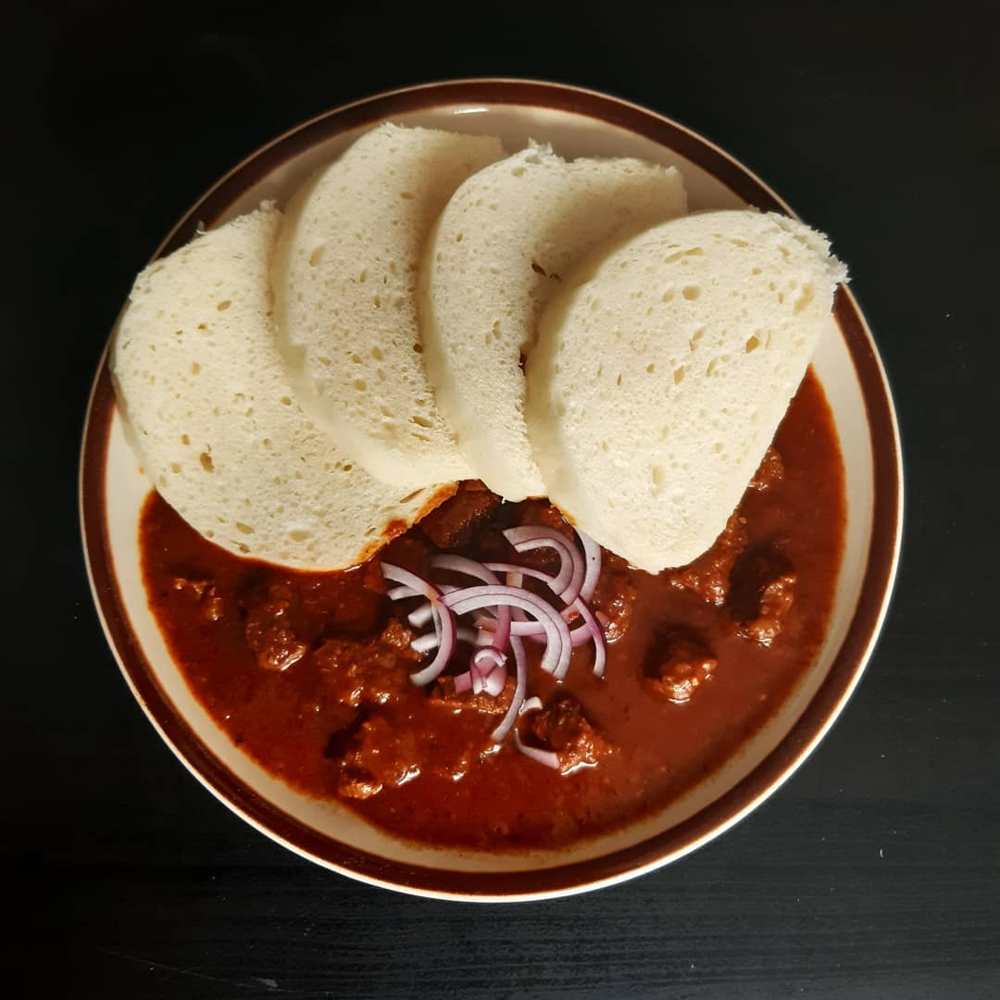

Hovädzí guláš podľa @jajfil — Normy Jedál
Český „hospodský“ guláš
--------------------------------------------------------------------------
Ingrediencie
700 g hovädzí močing/predne
600 g cibule
1 červená cibuľa na ozdobu
2 strúčiky cesnaku
2 pl bravčová masť
1 malá konzerva paradajkový pretlak
1 soľ
3 čl sladká mletá paprika
2 čl drvená rasca
podľa chuti chilli paprika
2 čl sušená majoránka
2 čl korenie na guláš
Postup
Cibuľu a cesnak ošúpeme a nakrájame na drobni. Mäso na kocky.
Masť rozpustíme v hrnci rozohrejeme a opražíme cibuľu do hned. Miešame drevenou vareškou a stale zoškrabávame dni hrnca od napečenej cibuľku, ak je napeku veľa a uz nejde zoškrabovať najelej asi 3 pl vody a ono sa uvolni a krasne cibuľku zafarbi. Takto pražime aspoň pol hodinu. Dodá to neskutočnú chuť a hlavne farbu. Masť je plná cibuľovej chuti a vône.
Na masť pridáme mäso a opekáme dôkladne zo všetkých strán.
Zasypeme paprikou, soľou, drvenou rascou a premiešame. Pridáme máličko horúcej vody a pridáme celý paradajkový pretlak.
Prelisujeme cesnak a podlejem vriacou vodou.
Vody nemá byť veľa, tak aby bolo mäso zakryté skoro celé.
Mäso sa má dusiť vždy tak, aby bolo akurát v šťave. Nesmie sa prichytávať o dno, ale nesmie ani plávať v hnedej vode.
Dusíme podľa kvality mäsa, v hrnci na sporáku cca 2h za občasného premiešania a podliatia. V rúre pod pokrievkou pri teplote 200°C tiež tak 2 hodiny v tlakovom hrnci 20-25 min podla veľkosti kociek mäsa.
Na záver vsypeme majoránku a podľa chuti chilli mletú papriku ka davam aj to korenie na guľaš. Ak treba dosolíme.
Omáčka je hustá, mäso sa dá krájať lyžicou. Ak sa predsa spraví redší klasicku zahustite múkou rozmiešanou vo vode. A prevarte.
Podavame s knedľou, pripadne cestoviny, chlieb, zemiakové placky.
#beef#beefstew#goulash#steamed#dumpling#meal#lunch#spices#meat#food#delicious#pressurecooker#recipe#recept#gulas#hovadzie#hovadzigulas#knedla#